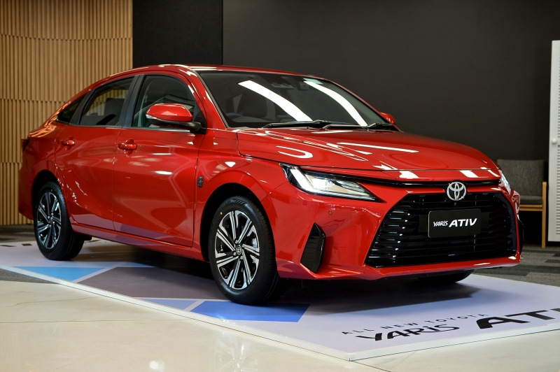
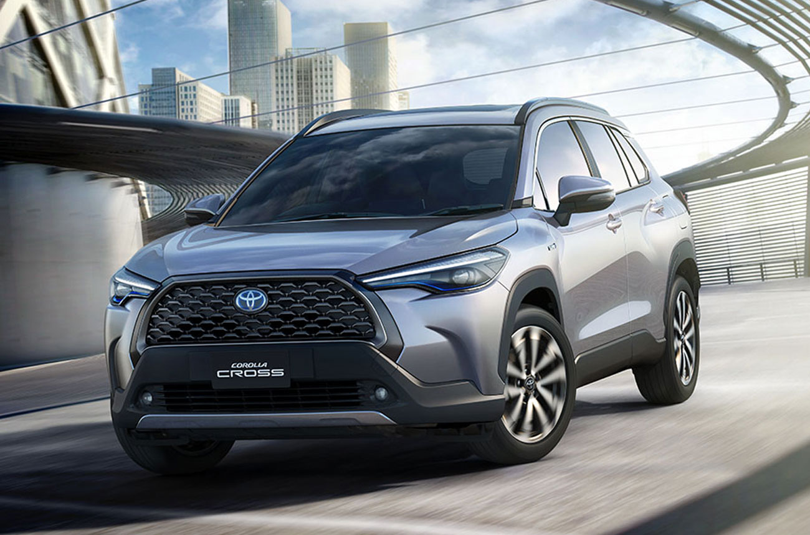

|  | ALL NEW TOYOTA YARIS ATIV |
| 539,000 – 689,000 บาท | |
All-New Toyota Yaris ATIV 2022 ใหม่MR.CARROสิงหาคม 9, 2022
3 minutes read
Toyota (โตโยต้า) เปิดตัวรถยนต์ Compact Sedan รุ่นใหม่ล่าสุด All-New Toyota Yaris ATIV 2022 (โตโยต้า ยาริส เอทีฟ) ภายใต้ปรัชญา “People Beloved Car” หรือ “รถยนต์ที่เป็นที่ชื่นชอบของทุกคน” ด้วยรูปทรงสไตล์ Fastback และเครื่องยนต์เบนซิน 1.2 ลิตร Dual VVT-iE 94 แรงม้า อันเป็นผลสำเร็จจากการศึกษาความต้องการของลูกค้าอย่างแท้จริงในทุกด้าน ทำให้ได้รถยนต์ที่จะเป็นที่ชื่นชอบของทุกคน ตอบโจทย์ลูกค้าอย่างแท้จริง https://www.youtube.com/watch?v=6Gy55K1kgp0 พร้อมด้วย Package การขายที่จะทำให้ผู้ที่ครอบครองเป็นเจ้าของ All-New Toyota Yaris ATIV 2022 (โตโยต้า ยาริส เอทีฟ) ได้รับมากกว่ารถยนต์ ด้วยประสบการณ์ที่ดีที่สุด ทำให้ลูกค้าได้รับความคุ้มค่า สะดวกสบาย พร้อมความพึงพอใจสูงสุดในการเป็นเจ้าของ มีให้เลือกทั้งหมด 4 รุ่นย่อย ในราคา 539,000 – 689,000 บาท
|
|  | TOYOTA Corolla croos |
| 999,000 – 1,254,000 บ | |
Toyota Corolla CROSS ถือเป็นหนึ่งในโมเดลขายดีของโตโยต้าประเทศไทย ด้วยขนาดตัวที่กะทัดรัด แต่เปี่ยมความอเนกประสงค์แบบเอสยูวี แถมยังมีราคาที่น่าจับต้อง เหมาะสำหรับครอบครัวที่กำลังมองหา "ตัวจบ" จะใช้งานคนเดียวก็ไม่เทอะทะ จะใช้เป็นรถครอบครัวช่วงวันหยุดก็ตอบโจทย์ได้ดีการปรับโฉม Toyota Corolla CROSS 2024 ไมเนอร์เชนจ์ครั้งนี้ จึงถือเป็นการเพิ่มความคุ้มค่าน่าใช้มากยิ่งขึ้น ด้วยออปชันที่เติมเข้ามาตั้งแต่รุ่นเริ่มต้นยันรุ่นท็อป แถมยังคงราคาจำหน่ายเท่าเดิมทุกรุ่นย่อย จึงไม่น่าแปลกที่โตโยต้าตั้งเป้ายอดจำหน่ายรถรุ่นนี้เอาไว้ถึง 1,500 คันต่อเดือน ซึ่งไม่ใช่เป้าที่ง่ายเลยสำหรับรถระดับราคา 1 ล้านบาทขึ้นไป |
 |
Toyota GR Supra |
| 4,999,000 | |
All NEW Supra ใหม่ (รหัส A90) ใช้แพลทฟอร์มร่วมกับ BMW Z4 (G29) และ กลายเป็นรถยนต์คู่แรก ที่เกิดขึ้นจากข้อตกลงร่วมพัฒนารถสปอร์ตด้วยกัน โดยมี Tetsuya Tada : Chief Engineer ผู้นำการพัฒนา All NEW Toyota Supra แยกกันทำตลาดคนละรูปแบบตัวถังโดย BMW Z4 จะเป็นตัวถังแบบเปิดประทุน Roadster ส่วน Toyota Supra จะเป็นแบบ Coupe’ เครื่องยนต์เบนซิน แบบ 6 สูบแถวเรียง DOHC 24 วาล์ว ขนาด 3.0 ลิตร 2,998 ซีซี. เทอร์โบ twin-scroll กระบอกสูบ x ระยะช่วงชัก : 94.6 x 82.0 มิลลิเมตร อัตราส่วนกำลังอัด 11.0 : 1 ให้กำลังสูงสุด 340 แรงม้า ที่ 5,000 – 6,500 รอบ/นาที แรงบิดสูงสุด 500 นิวตันเมตร ที่ 1,600 – 4,500 รอบ/นาที จับคู่กับเกียร์อัตโนมัติ 8 จังหวะ ขับเคลื่อนล้อหลัง |